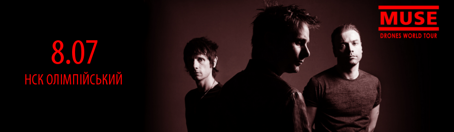
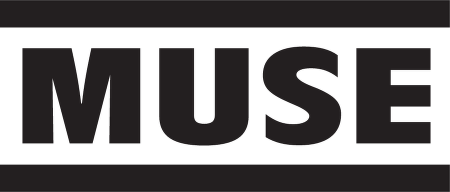

Концерт Muse в Києві відбудеться 8 липня 2016 року о 16:00 на НСК "Олімпійський". Британці поспішають в Київ, щоб поділитися старими хітами і, звісно ж, треками з нового альбома Drones.Який доречі, отримав нагороду як "Кращий рок-альбом" на врученні "Греммі-2016". Останній концерт в столиці Muse відіграли більше п'яти років тому назад і тепер вони повертаютьтся! Наближається найпотужніший стадіонний концерт, у супроводі неперевершених спецефектів і тон піротехніки!
